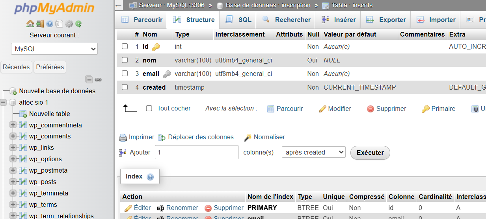
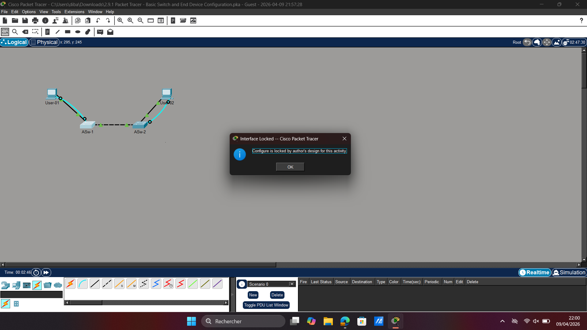
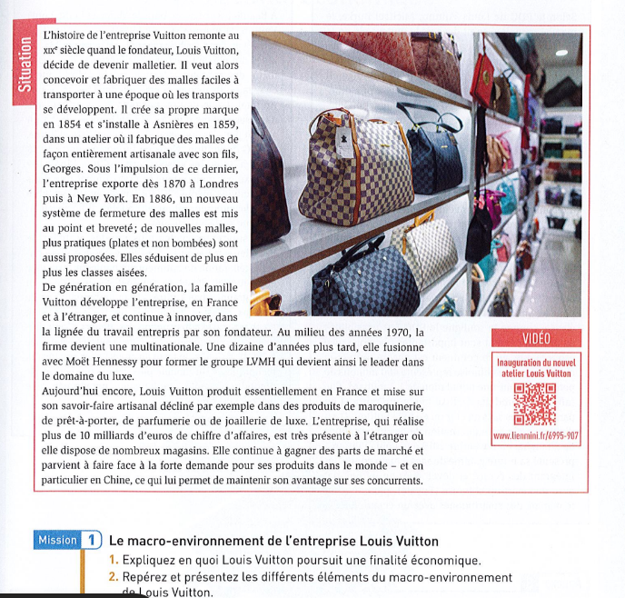

PORTFOLIO PROFESSIONNEL
Zakaria DIBA
Étudiant BTS SIO SISR
Systèmes • Réseaux • Cybersécurité
À propos
Étudiant en BTS SIO option SISR, je me spécialise dans l'administration des systèmes, la cybersécurité et les infrastructures réseau.
Passionné par les environnements Windows Server, Linux et les technologies réseau Cisco.
Je développe régulièrement des projets liés à la virtualisation, Active Directory et la sécurisation des infrastructures IT.
Compétences
Windows Server
Linux
Virtualisation
Réseaux / Cisco
Cybersécurité
Git / GitHub
Active Directory
Firewall / VPN
Projets



Contact
Disponible pour stage ou alternance.